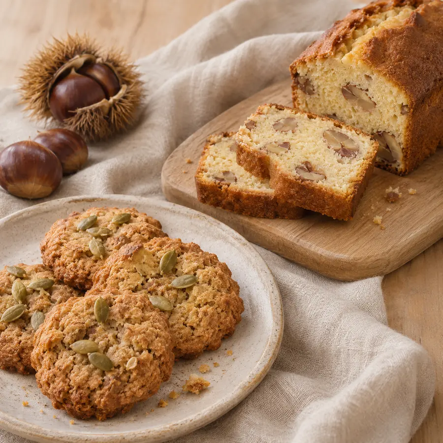
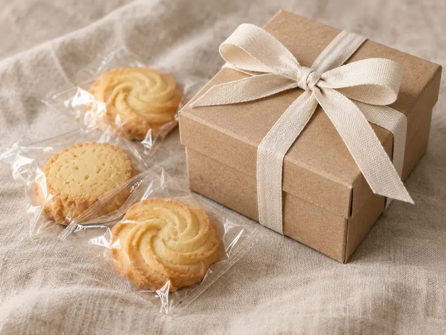

季節の菓子
栗のパウンドケーキが焼き上がりました
今年も、栗をたっぷり入れたパウンドケーキの季節です。1本まるごとと、厚めに切った1切れがあります。数に限りがあるので、お取り置きはお電話でどうぞ。
NEWS
焼き上がり・お休み・新しい菓子のお知らせです。

季節の菓子
今年も、栗をたっぷり入れたパウンドケーキの季節です。1本まるごとと、厚めに切った1切れがあります。数に限りがあるので、お取り置きはお電話でどうぞ。

お休み
11月は、月曜・火曜のほかに、23日（月・祝）もお休みします。営業日はアクセスのページの表でご確認ください。

新しい菓子
香ばしいかぼちゃの種をのせた、ざくざくのクッキーです。珈琲にもよく合います。

ギフト
ご挨拶やお礼に使える、箱入りの詰め合わせを始めました。中身と値段はメニューのページにあります。前の日までにご予約ください。

募集
週3日から、朝7時〜11時の焼き場のお仕事です。くわしくはスタッフ募集のページをご覧ください。